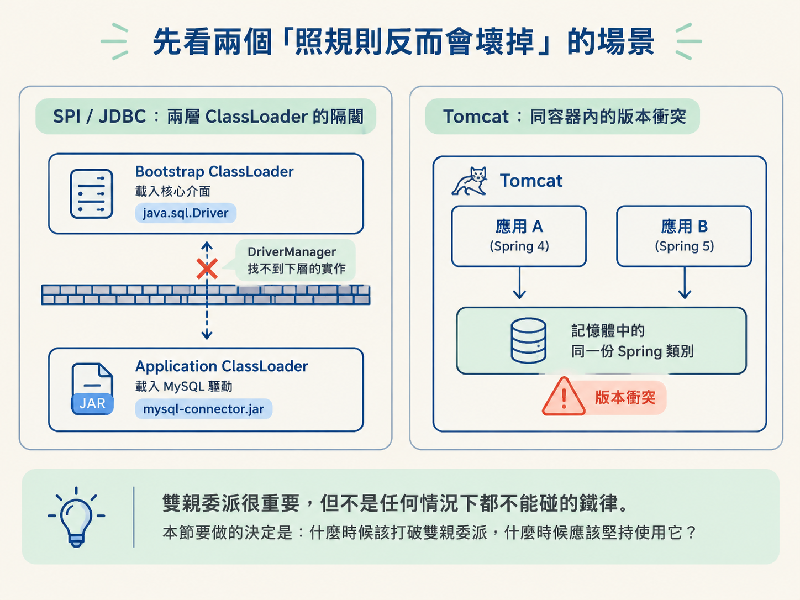
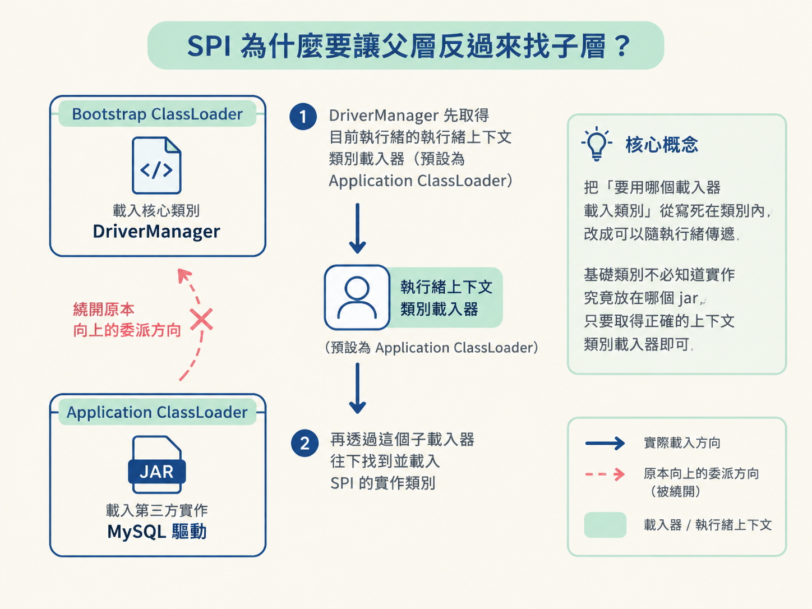
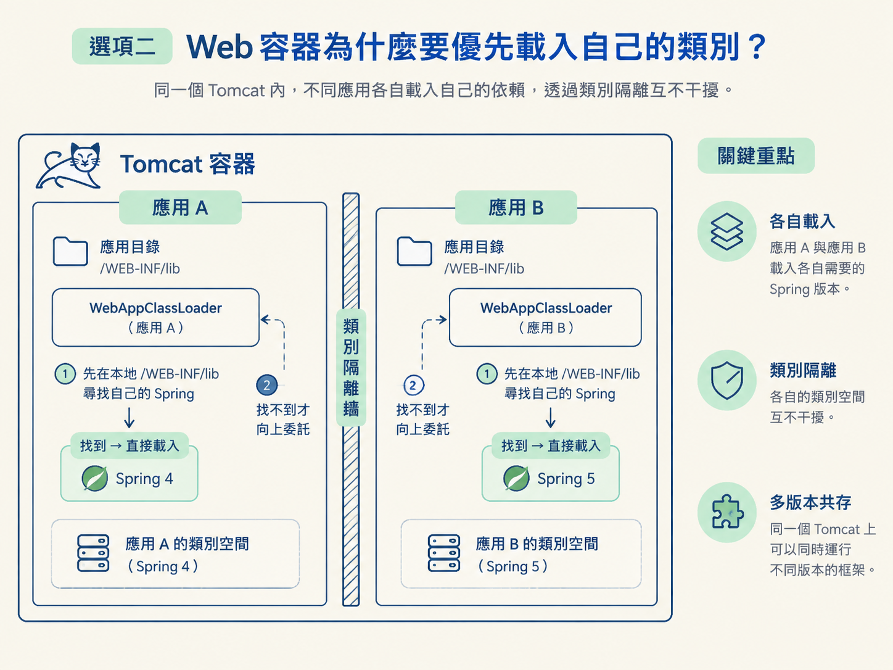
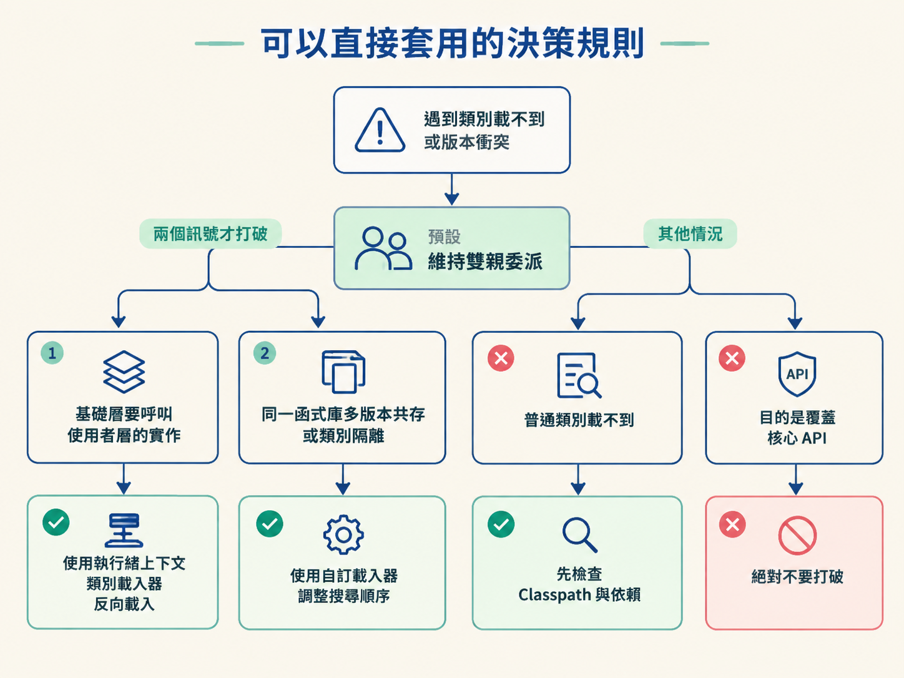

你可能遇過這種情況：JDBC 的 java.sql.Driver 介面由 JDK 核心庫提供，MySQL 驅動卻放在 Classpath 的 jar 裡。前者由 Bootstrap ClassLoader 載入，後者由 Application ClassLoader 載入。Bootstrap ClassLoader 位在上層，看不到下層的 Classpath，那 DriverManager 到底怎麼找到 MySQL 驅動？
另一個場景是 Tomcat：同一個容器裡同時部署兩個應用，A 使用 Spring 4，B 使用 Spring 5。如果完全遵守雙親委派，記憶體中的 Spring 可能只會有一份。B 請求載入 Spring 時，拿到的可能是 A 先載入的舊版本，最後直接發生版本衝突。
這兩個例子都說明：雙親委派很重要，但也不是什麼情況都不能碰的鐵律。這一節要判斷的是：什麼時候該打破雙親委派，什麼時候該守住它？

雙親委派用「先向上委託」保護核心類別，也讓同一個類別在 JVM 裡盡量只有一份。這套機制像一扇單向門：下層可以請上層幫忙載入，上層卻看不到下層載入的類別。
大多數情況下，這正是我們想要的安全邊界。可是當基礎層需要呼叫使用者層的實作，或多個應用得同時用同一套函式庫的不同版本時，這扇門就會擋住真正的需求。
所以問題不在「雙親委派好不好」，而在眼前的需求該優先保住什麼：是核心類別的安全與唯一，還是上層與下層之間的可見性。
| 場景一：SPI（JDBC 等） | 場景二：Web 容器隔離 | |
|---|---|---|
| 遇到的問題 | 基礎層的介面要呼叫使用者層的實作，但父載入器看不到子載入器的類別 | 同一個容器裡的多個應用依賴同一函式庫的不同版本，委派與快取會造成版本衝突 |
| 打破的方向 | 父層繞過原本的委派方向，反向請子層載入實作 | 子層先載入自己的類別，找不到時才向上委託 |
| 關鍵機制 | 執行緒上下文類別載入器（預設為 Application ClassLoader） | 自訂 WebAppClassLoader，調整類別的搜尋順序 |
| 想解決的事 | 打通介面與實作的連結，讓基礎層可以擴充 | 隔離不同應用的類別，讓它們各自使用需要的版本 |
SPI（Service Provider Interface，服務提供者介面）處理的是「基礎類別要呼叫使用者程式碼」。JDBC 就是典型例子：介面放在核心庫，真正的實作則放在第三方驅動包中。
如果完全照雙親委派的方向走，核心介面由 Bootstrap ClassLoader 載入，第三方實作由 Application ClassLoader 載入，而父載入器又看不到子載入器。結果就是，DriverManager 根本碰不到 MySQL 驅動，SPI 也無法運作。
JDK 的做法是使用執行緒上下文類別載入器（Thread Context ClassLoader）。DriverManager 初始化時，會取得目前執行緒的上下文類別載入器；這個載入器預設就是 Application ClassLoader。接著，它使用這個「子載入器」去載入 SPI 的實作類別。
換句話說，父層沒有直接看穿整個載入器階層，而是透過目前執行緒攜帶的載入器，請子層代為找到實作。這就是典型的「父級委託子級」：刻意繞開原本向上的委派方向，讓基礎類別可以用下層提供的擴充。
這個設計的重點，是把「要用哪個載入器載入類別」從寫死在類別內，改成可以隨執行緒傳遞。基礎類別不必知道實作究竟放在哪個 jar，只要取得正確的上下文類別載入器即可。

Tomcat 這類 Web 容器面對的是另一個問題：同一個容器裡可能同時部署多個應用，而每個應用可能依賴同一個第三方函式庫的不同版本。
如果完全遵守雙親委派，載入器會一路向上尋找；再加上類別載入之後會被快取，一旦某個版本的 Spring 先被載入，記憶體裡就已經有了這個類別。另一個應用要載入不同版本時，可能直接拿到快取中的舊版本，最後發生版本衝突。
Tomcat 的解法是自訂 WebAppClassLoader，把搜尋順序調整過來：先在自己的應用目錄（/WEB-INF/lib）尋找，找不到時才向上委託。
如此一來，應用 A 與應用 B 都能載入自己依賴的 Spring 版本，彼此的類別不會互相干擾。這就是類別隔離，也解釋了為什麼同一個 Tomcat 上的不同應用可以使用不同版本的框架。

遇到「類別載不到」或「版本互相衝突」，先別急著改類別載入器。先用下面三個問題確認，眼前是否真的符合需要打破雙親委派的條件。
這三個問題可以幫你分辨：你是在處理雙親委派本身造成的限制，還是只是在掩蓋一般的依賴設定問題。
打破雙親委派有代價，所以「載不到類別」不能直接當成充分理由。如果只是普通業務類別載入失敗，應該先檢查 Classpath、依賴版本與打包方式。雙親委派之所以是預設方案，就是因為它已經能處理絕大多數一般情況。
更不能為了覆蓋 JDK 核心類別而打破委派。雙親委派其中一個重要目的，就是防止使用者程式碼取代核心 API。繞過這道安全邊界，通常不會讓問題變簡單，反而可能造成更嚴重的錯誤。
即使是確實需要隔離的場景，也要記得它會引入新的複雜度。由不同類別載入器載入的同名類別，在 JVM 眼中是兩個不同的類別。它們不能互相轉型，也可能讓類別載入器或相關物件無法順利回收。
所以，只有在需求真的涉及「父層呼叫子層實作」或「多版本共存與類別隔離」時，才值得付這些代價。若只是一般設定錯誤，貿然換成自訂載入器，就像為了修門把而把整面牆拆掉。
預設使用雙親委派。只有在兩個訊號出現時才打破：一、基礎層需要呼叫使用者層的實作，使用執行緒上下文類別載入器反向載入；二、需要同一函式庫的多版本共存或類別隔離，使用自訂載入器調整搜尋順序。若只是普通類別載不到，先檢查 Classpath 與依賴；若目的是覆蓋核心 API，絕對不要打破。

雙親委派用安全與唯一，換來的是單向可見性。SPI（例如 JDBC）透過執行緒上下文類別載入器，讓父層反向載入子層的實作；Web 容器（例如 Tomcat）則透過自訂 WebAppClassLoader 優先載入本地類別，達成多版本隔離。這兩種都是在「父層要呼叫子層」或「不同版本必須共存」時，對雙親委派做出的刻意調整。打破委派會帶來類別唯一性、轉型跟回收上的複雜度，所以非必要不要打破。
到這裡，這個節點的六步就走完了：從位元組碼怎麼執行、資料放在哪裡、物件長什麼樣，到類別如何被載入與委派。你現在應該能把「一台 JVM 從啟動到執行你的程式碼」講成一條完整鏈路，而不是只記住幾個分散的名詞。